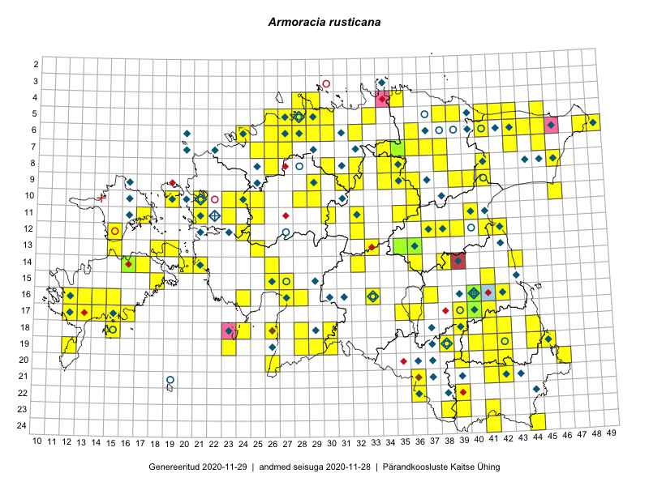

Armoracia rusticana
Uuendatud: 2016-12-08
Kaardile koondatud taksonid: Armoracia rusticana P.Gaertn., B.Mey. & Scherb.

Kaart põhineb 237 vaatlusel. Taime on leitud 115 ruudust.
| Ruut | Vaatleja(d) | Vaatlusaeg | Kirje tüüp | Viide andmebaasikirjele |
|---|---|---|---|---|
| 19-29 | Peedu Saar, Liina Oja | 2015-05-22 | ruut/ala | vaata PlutoFis |
| 16-40 | Thea Kull | 2015-07-07 | ruut/ala | vaata PlutoFis |
| 16-24 | Peedu Saar, Liina Oja | 2015-05-21 | ruut/ala | vaata PlutoFis |
| 06-41 | Peedu Saar, S. Laherand | 2015-06-01 | punkt | vaata PlutoFis |
| 06-44 | Peedu Saar, Liina Oja | 2015-07-21 | punkt | vaata PlutoFis |
| 05-45 | Tiit Hallikma, Toomas Kukk | 2015-07-21 | ruut/ala | vaata PlutoFis |
| 09-41 | Toomas Kukk, Raivo Kalle | 2015-05-14 | ruut/ala | vaata PlutoFis |
| 09-41 | Toomas Kukk, Raivo Kalle | 2015-05-14 | punkt | vaata PlutoFis |
| 17-39 | Peedu Saar, Thea Kull | 2015-06-17 | punkt | vaata PlutoFis |
| 11-35 | Peedu Saar, Ott Luuk | 2015-07-27 | punkt | vaata PlutoFis |
| 05-45 | Tiit Hallikma, Toomas Kukk | 2015-07-21 | punkt | vaata PlutoFis |
| 11-35 | Ott Luuk, Peedu Saar | 2015-07-27 | ruut/ala | vaata PlutoFis |
| 06-41 | Peedu Saar, Sander Laherand | 2015-06-01 | ruut/ala | vaata PlutoFis |
| 06-44 | Peedu Saar, Liina Oja | 2015-07-21 | ruut/ala | vaata PlutoFis |
| 06-41 | Toomas Kukk, Tiit Hallikma | 2015-07-24 | ruut/ala | vaata PlutoFis |
| ? | Malle Leht | 2015-07-28 | ruut/ala | vaata PlutoFis |
| 16-40 | Thea Kull | 2015-07-26 | punkt | vaata PlutoFis |
| 05-30 | Rein Kalamees, Kersti Püssa | 2015-09-01 | ruut/ala | vaata PlutoFis |
| 12-39 | Peedu Saar, Eerik Leibak | 2015-08-16 | ruut/ala | vaata PlutoFis |
| 04-35 | Rein Kalamees, Kersti Püssa | 2015-08-25 | ruut/ala | vaata PlutoFis |
| 06-41 | Tiit Hallikma, Toomas Kukk | 2015-07-24 | punkt | vaata PlutoFis |
| 12-24 | Tiit Hallikma, Toomas Kukk | 2015-08-24 | ruut/ala | vaata PlutoFis |
| 06-48 | Ott Luuk, Hannes Pehlak | 2015-07-21 | ruut/ala | vaata PlutoFis |
| 06-49 | Ott Luuk, Hannes Pehlak | 2015-07-21 | ruut/ala | vaata PlutoFis |
| 16-42 | Peedu Saar | 2015-06-05 | punkt | vaata PlutoFis |
| 17-39 | Thea Kull, Peedu Saar | 2015-06-17 | ruut/ala | vaata PlutoFis |
| 19-45 | Toomas Kukk, Timo Luhamäe, Kersti Tambets, Sten Mander, Janika Sammasto | 2014-07-29 | ruut/ala | vaata PlutoFis |
| 14-43 | Thea Kull, Eerik Leibak | 2015-07-06 | ruut/ala | vaata PlutoFis |
| 14-43 | Thea Kull, Eerik Leibak | 2015-07-06 | punkt | vaata PlutoFis |
| 19-44 | Toomas Kukk | 2014-07-09 | ruut/ala | vaata PlutoFis |
| 06-45 | Thea Kull, Eerik Leibak | 2015-07-20 | ruut/ala | vaata PlutoFis |
| 06-45 | Thea Kull, Eerik Leibak | 2015-07-20 | punkt | vaata PlutoFis |
| 05-42 | Thea Kull, Eerik Leibak | 2015-07-22 | ruut/ala | vaata PlutoFis |
| 05-42 | Thea Kull, Eerik Leibak | 2015-07-22 | punkt | vaata PlutoFis |
| 08-46 | Meeli Mesipuu, Timo Luhamäe | 2015-07-21 | ruut/ala | vaata PlutoFis |
| 07-34 | Jana-Maria Habicht, Ester Valdvee | 2015-06-27 | ruut/ala | vaata PlutoFis |
| 19-23 | Ott Luuk | 2015-05-30 | punkt | vaata PlutoFis |
| 07-34 | Jana-Maria Habicht, Ester Valdvee | 2015-07-20 | ruut/ala | vaata PlutoFis |
| 16-42 | Peedu Saar | 2015-06-05 | ruut/ala | vaata PlutoFis |
| 08-34 | Jana-Maria Habicht, Ester Valdvee | 2015-07-31 | ruut/ala | vaata PlutoFis |
| 08-34 | Jana-Maria Habicht, Ester Valdvee | 2015-08-15 | ruut/ala | vaata PlutoFis |
| 08-35 | Jana-Maria Habicht, Ester Valdvee, Kirke Pilvik | 2015-07-14 | ruut/ala | vaata PlutoFis |
| 09-34 | Jana-Maria Habicht, Ester Valdvee, Kirke Pilvik | 2015-07-25 | ruut/ala | vaata PlutoFis |
| 09-35 | Jana-Maria Habicht, Ester Valdvee, Kirke Pilvik, Anu Nurk | 2015-07-30 | ruut/ala | vaata PlutoFis |
| 08-46 | Thea Kull, Eerik Leibak | 2015-07-23 | punkt | vaata PlutoFis |
| 19-45 | Thea Kull, Meeli Mesipuu | 2015-08-19 | ruut/ala | vaata PlutoFis |
| 19-44 | Thea Kull, Meeli Mesipuu | 2015-08-12 | ruut/ala | vaata PlutoFis |
| 15-41 | Thea Kull | 2015-06-21 | punkt | vaata PlutoFis |
| 17-13 | Mari Reitalu | 2015-05-06 | punkt | vaata PlutoFis |
| 17-13 | Mari Reitalu | 2015-05-06 | ruut/ala | vaata PlutoFis |
| 07-34 | Jana-Maria Habicht, Ester Valdvee | 2015-06-27 | punkt | vaata PlutoFis |
| 08-35 | Jana-Maria Habicht, Ester Valdvee, Kirke Pilvik | 2015-07-14 | punkt | vaata PlutoFis |
| 07-34 | Jana-Maria Habicht, Ester Valdvee | 2015-07-20 | punkt | vaata PlutoFis |
| 09-34 | Jana-Maria Habicht, Ester Valdvee | 2015-07-25 | punkt | vaata PlutoFis |
| 09-34 | Jana-Maria Habicht, Ester Valdvee | 2015-07-25 | punkt | vaata PlutoFis |
| 08-34 | Jana-Maria Habicht, Ester Valdvee | 2015-07-31 | punkt | vaata PlutoFis |
| 08-34 | Jana-Maria Habicht, Ester Valdvee | 2015-07-31 | punkt | vaata PlutoFis |
| 08-34 | Jana-Maria Habicht, Ester Valdvee | 2015-07-31 | punkt | vaata PlutoFis |
| 08-34 | Jana-Maria Habicht, Ester Valdvee | 2015-07-31 | punkt | vaata PlutoFis |
| 08-34 | Jana-Maria Habicht, Ester Valdvee | 2015-08-15 | punkt | vaata PlutoFis |
| 17-12 | Mari Reitalu | 2015-08-25 | ruut/ala | vaata PlutoFis |
| 11-30 | Ott Luuk, Toivo Sepp | 2015-08-20 | punkt | vaata PlutoFis |
| 17-14 | Sirje Azarov, Mari Reitalu | 2015-04-27 | ruut/ala | vaata PlutoFis |
| 17-14 | Sirje Azarov, Mari Reitalu | 2015-04-30 | punkt | vaata PlutoFis |
| 08-46 | Timo Luhamäe, Meeli Mesipuu | 2015-07-21 | punkt | vaata PlutoFis |
| 09-39 | Elle Rajandu | 2015-08-14 | punkt | vaata PlutoFis |
| 19-44 | Meeli Mesipuu, Thea Kull | 2015-08-12 | punkt | vaata PlutoFis |
| 11-30 | Toivo Sepp, Ott Luuk | 2015-08-20 | ruut/ala | vaata PlutoFis |
| 16-15 | Elle Rajandu | 2015-07-20 | punkt | vaata PlutoFis |
| 16-37 | Helle Mäemets, Mare Leis | 2015-06-22 | ruut/ala | vaata PlutoFis |
| 17-36 | Helle Mäemets, Mare Leis | 2015-06-25 | ruut/ala | vaata PlutoFis |
| 13-19 | Kadri Tali | 2015-06-03 | ruut/ala | vaata PlutoFis |
| 19-45 | Meeli Mesipuu, Thea Kull | 2015-08-19 | punkt | vaata PlutoFis |
| 05-29 | Peedu Saar, Sander Laherand | 2013-07-07 | ruut/ala | vaata PlutoFis |
| 11-25 | Hanna-Eliisa Luts, Tõnu Ploompuu | 2015-07-28 | ruut/ala | vaata PlutoFis |
| 10-24 | Hanna-Eliisa Luts, Tõnu Ploompuu, Anna-Grete Rebane | 2015-07-19 | ruut/ala | vaata PlutoFis |
| 09-35 | Jana-Maria Habicht, Ester Valdvee, Kirke Pilvik, Anu Nurk | 2015-07-30 | punkt | vaata PlutoFis |
| 12-37 | Ulvi Selgis | 2016-05-05 | ruut/ala | vaata PlutoFis |
| 06-27 | Tõnu Ploompuu | 2015-08-11 | ruut/ala | vaata PlutoFis |
| 16-37 | Helle Mäemets, Mare Leis | 2015-06-22 | punkt | vaata PlutoFis |
| 11-23 | Hanna-Eliisa Luts, Anna-Grete Rebane, Tõnu Ploompuu | 2015-07-20 | ruut/ala | vaata PlutoFis |
| 06-28 | Tõnu Ploompuu | 2015-06-06 | ruut/ala | vaata PlutoFis |
| 06-28 | Toomas Kukk | 2016-06-02 | ruut/ala | vaata PlutoFis |
| 20-26 | Peedu Saar, Thea Kull | 2016-06-06 | ruut/ala | vaata PlutoFis |
| 20-26 | Thea Kull, Peedu Saar | 2016-06-06 | punkt | vaata PlutoFis |
| 06-28 | Toomas Kukk | 2016-06-06 | punkt | vaata PlutoFis |
| 05-28 | Toomas Kukk, Peedu Saar | 2016-06-01 | punkt | vaata PlutoFis |
| 06-28 | Toomas Kukk | 2016-06-02 | punkt | vaata PlutoFis |
| 10-21 | Tõnu Ploompuu | 2015-05-02 | ruut/ala | vaata PlutoFis |
| 10-21 | Tõnu Ploompuu | 2015-08-21 | ruut/ala | vaata PlutoFis |
| 21-36 | Kai Rünk, Ülle Jõgar, Illi Tarmu | 2016-06-15T06:00Z | ruut/ala | vaata PlutoFis |
| 21-36 | Kai Rünk, Ülle Jõgar, Illi Tarmu | 2016-06-15T06:00Z | punkt | vaata PlutoFis |
| 19-40 | Toomas Kukk, Tiit Hallikma, Johannes Kõdar | 2016-06-13 | ruut/ala | vaata PlutoFis |
| 19-42 | Ott Luuk, Sander Laherand | 2016-06-17 | ruut/ala | vaata PlutoFis |
| 24-44 | Rein Kalamees, Eerik Leibak | 2016-06-15 | ruut/ala | vaata PlutoFis |
| 19-45 | Toomas Kukk, Tiit Hallikma | 2016-06-17 | ruut/ala | vaata PlutoFis |
| 24-44 | Rein Kalamees, Eerik Leibak | 2016-06-15 | punkt | vaata PlutoFis |
| 18-39 | Peedu Saar, Tarmo Niitla | 2016-06-13 | punkt | vaata PlutoFis |
| 21-42 | Sander Laherand, Ott Luuk | 2016-06-16 | ruut/ala | vaata PlutoFis |
| 12-42 | Eeva-Maria Jeletsky, Tarmo Niitla | 2016-06-04 | ruut/ala | vaata PlutoFis |
| 12-42 | Eeva-Maria Jeletsky, Tarmo Niitla | 2016-06-04 | punkt | vaata PlutoFis |
| 14-38 | Kai Rünk, Ülle Jõgar, Illi Tarmu | 2016-06-20T05:00Z | ruut/ala | vaata PlutoFis |
| 14-38 | Kai Rünk, Ülle Jõgar, Illi Tarmu | 2016-06-20T06:00Z | punkt | vaata PlutoFis |
| 20-42 | Peedu Saar, Tarmo Niitla | 2016-06-16 | punkt | vaata PlutoFis |
| 21-41 | Ott Luuk, Sander Laherand | 2016-06-16 | ruut/ala | vaata PlutoFis |
| 24-41 | Ott Luuk, Sander Laherand, Susanna Vain | 2016-06-15 | ruut/ala | vaata PlutoFis |
| 19-28 | Peedu Saar, Ott Luuk | 2016-06-09 | punkt | vaata PlutoFis |
| 19-40 | Tiit Hallikma, Toomas Kukk | 2016-06-13 | punkt | vaata PlutoFis |
| 18-44 | Maret Gerz, Liina Oja | 2016-06-17 | ruut/ala | vaata PlutoFis |
| 18-44 | Maret Gerz, Liina Oja | 2016-06-17 | punkt | vaata PlutoFis |
| 21-41 | Sander Laherand, Ott Luuk | 2016-06-16 | punkt | vaata PlutoFis |
| 06-28 | Toomas Kukk | 2016-07-04 | ruut/ala | vaata PlutoFis |
| 06-28 | Toomas Kukk | 2016-07-04 | punkt | vaata PlutoFis |
| 09-29 | Toomas Kukk, Sander Laherand | 2016-07-06 | ruut/ala | vaata PlutoFis |
| 06-26 | Tiina Elvisto, Eerik Leibak | 2016-07-04 | ruut/ala | vaata PlutoFis |
| 06-26 | Tiina Elvisto, Eerik Leibak | 2016-07-04 | punkt | vaata PlutoFis |
| 24-41 | Sander Laherand, Ott Luuk, Susanna Vain | 2016-06-15 | punkt | vaata PlutoFis |
| 19-42 | Sander Laherand, Ott Luuk | 2016-06-15 | punkt | vaata PlutoFis |
| 19-41 | Sander Laherand, Ott Luuk, Susanna Vain | 2016-06-13 | punkt | vaata PlutoFis |
| 09-29 | Sander Laherand, Toomas Kukk | 2016-07-06 | punkt | vaata PlutoFis |
| 18-39 | Tarmo Niitla, Peedu Saar | 2016-06-13 | ruut/ala | vaata PlutoFis |
| 20-42 | Tarmo Niitla, Peedu Saar | 2016-06-16 | ruut/ala | vaata PlutoFis |
| 14-21 | Mari Reitalu, Oliver Parrest | 2016-07-04 | ruut/ala | vaata PlutoFis |
| 14-32 | Toomas Kukk, Liina Oja | 2016-07-21 | ruut/ala | vaata PlutoFis |
| 09-34 | Ott Luuk, Eerik Leibak | 2016-07-25 | ruut/ala | vaata PlutoFis |
| 09-34 | Ott Luuk, Eerik Leibak | 2016-07-25 | punkt | vaata PlutoFis |
| 07-38 | Liina Oja, Eerik Leibak | 2016-07-28 | ruut/ala | vaata PlutoFis |
| 17-16 | Meeli Mesipuu, Toomas Kukk | 2016-08-12 | punkt | vaata PlutoFis |
| 05-43 | Erkki Otsman, Sergei Smirnov | 2016-06-17 | ruut/ala | vaata PlutoFis |
| 07-36 | Thea Kull, Timo Luhamäe | 2016-07-27 | ruut/ala | vaata PlutoFis |
| 12-32 | Thea Kull, Raivo Kalle, Susanna Vain | 2016-07-21 | ruut/ala | vaata PlutoFis |
| 13-15 | Peedu Saar, Maret Gerz | 2016-08-11 | punkt | vaata PlutoFis |
| 18-39 | Tarmo Niitla, Peedu Saar | 2016-06-13 | punkt | vaata PlutoFis |
| 12-32 | Susanna Vain, Thea Kull, Raivo Kalle | 2016-07-21 | punkt | vaata PlutoFis |
| 07-38 | Liina Oja, Eerik Leibak | 2016-07-28 | punkt | vaata PlutoFis |
| 06-36 | Liina Oja, Peedu Saar, Susanna Vain | 2016-07-27 | punkt | vaata PlutoFis |
| 09-36 | Liina Oja, Peedu Saar, Susanna Vain | 2016-07-25 | punkt | vaata PlutoFis |
| 11-17 | Maret Gerz, Meeli Mesipuu | 2016-08-08 | ruut/ala | vaata PlutoFis |
| 13-15 | Maret Gerz, Peedu Saar | 2016-08-11 | ruut/ala | vaata PlutoFis |
| 04-28 | Sander Laherand, Tõnu Ploompuu, Nele Jõessar | 2016-07-25 | punkt | vaata PlutoFis |
| 19-38 | Timo Luhamäe, Meeli Mesipuu | 2016-06-13 | punkt | vaata PlutoFis |
| 18-26 | Timo Luhamäe, Meeli Mesipuu | 2016-07-18 | punkt | vaata PlutoFis |
| 06-36 | Karin Kikas, Elle Rajandu | 2016-06-28 | punkt | vaata PlutoFis |
| 05-29 | Toomas Kukk, Sander Laherand | 2016-08-29 | ruut/ala | vaata PlutoFis |
| 18-24 | Karin Kaljund, Kaire Lanno, Indrek Melts | 2016-07-26 | ruut/ala | vaata PlutoFis |
| 18-24 | Karin Kaljund, Kaire Lanno, Indrek Melts | 2016-07-26 | punkt | vaata PlutoFis |
| 06-30 | Toomas Kukk, Sander Laherand | 2016-08-30 | ruut/ala | vaata PlutoFis |
| 17-15 | Toomas Kukk, Meeli Mesipuu, Johannes Kõdar | 2016-08-11 | punkt | vaata PlutoFis |
| 17-15 | Toomas Kukk, Meeli Mesipuu, Johannes Kõdar | 2016-08-11 | punkt | vaata PlutoFis |
| 17-16 | Toomas Kukk, Meeli Mesipuu | 2016-08-12 | ruut/ala | vaata PlutoFis |
| 06-29 | Toomas Kukk, Sander Laherand | 2016-08-29 | punkt | vaata PlutoFis |
| 06-29 | Toomas Kukk, Sander Laherand | 2016-08-29 | punkt | vaata PlutoFis |
| 04-29 | Sander Laherand, Tõnu Ploompuu, Nele Jõessar | 2016-07-25 | ruut/ala | vaata PlutoFis |
| 10-25 | Sirje Azarov, Meeli Mesipuu | 2016-07-06 | ruut/ala | vaata PlutoFis |
| 10-25 | Sirje Azarov, Meeli Mesipuu | 2016-07-06 | punkt | vaata PlutoFis |
| 04-28 | Sander Laherand, Tõnu Ploompuu, Nele Jõessar | 2016-07-25 | ruut/ala | vaata PlutoFis |
| 14-32 | Liina Oja, Toomas Kukk | 2016-07-21 | punkt | vaata PlutoFis |
| 10-46 | Meeli Mesipuu, Karin Kikas | 2016-08-31 | ruut/ala | vaata PlutoFis |
| 13-25 | Timo Luhamäe, Peedu Saar | 2016-07-05 | punkt | vaata PlutoFis |
| 10-28 | Timo Luhamäe, Peedu Saar | 2016-07-06 | punkt | vaata PlutoFis |
| 19-28 | Liina Oja, Toivo Sepp | 2016-07-19 | punkt | vaata PlutoFis |
| 06-32 | Toomas Kukk, Peedu Saar | 2016-09-08 | ruut/ala | vaata PlutoFis |
| 06-32 | Toomas Kukk, Peedu Saar | 2016-09-08 | punkt | vaata PlutoFis |
| 05-28 | Toomas Kukk, Peedu Saar | 2016-08-03 | ruut/ala | vaata PlutoFis |
| 06-29 | Sander Laherand, Toomas Kukk | 2016-08-29 | ruut/ala | vaata PlutoFis |
| 10-46 | Karin Kikas, Meeli Mesipuu | 2016-08-31 | punkt | vaata PlutoFis |
| 09-32 | Toomas Kukk, Peedu Saar | 2016-09-16 | ruut/ala | vaata PlutoFis |
| 16-27 | Tiit Hallikma, Tõnu Ploompuu | 2016-06-20 | ruut/ala | vaata PlutoFis |
| 15-27 | Tiit Hallikma, Tõnu Ploompuu | 2016-06-20 | ruut/ala | vaata PlutoFis |
| 06-30 | Sander Laherand, Toomas Kukk | 2016-08-30 | punkt | vaata PlutoFis |
| 14-21 | Mari Reitalu, Oliver Parrest | 2016-07-04 | punkt | vaata PlutoFis |
| 06-43 | Erkki Otsman, Sergei Smirnov | 2016-06-17 | punkt | vaata PlutoFis |
| 19-23 | Peedu Saar, Ott Luuk | 2016-09-21 | punkt | vaata PlutoFis |
| 18-24 | Peedu Saar, Ott Luuk | 2016-09-21 | ruut/ala | vaata PlutoFis |
| 09-32 | Peedu Saar, Toomas Kukk | 2016-09-16 | punkt | vaata PlutoFis |
| 06-24 | Peedu Saar, Ott Luuk | 2016-09-06 | punkt | vaata PlutoFis |
| 07-25 | Helle Mäemets, Tiina Elvisto | 2016-07-05 | ruut/ala | vaata PlutoFis |
| ? | Helle Mäemets, Tiina Elvisto | 2016-07-05 | punkt | vaata PlutoFis |
| 19-45 | Tiit Hallikma, Toomas Kukk | 2016-06-17 | punkt | vaata PlutoFis |
| 16-27 | Tiit Hallikma, Tõnu Ploompuu | 2016-07-20 | punkt | vaata PlutoFis |
| 15-18 | Mari Reitalu | 2014-05-24 | ruut/ala | vaata PlutoFis |
| 08-32 | Peedu Saar, Ott Luuk | 2016-09-28 | punkt | vaata PlutoFis |
| 14-17 | Peedu Saar, Ott Luuk | 2016-08-29 | punkt | vaata PlutoFis |
| 15-27 | Tiit Hallikma, Tõnu Ploompuu | 2016-07-20 | punkt | vaata PlutoFis |
| 18-15 | Peedu Saar | 2016-08-30 | punkt | vaata PlutoFis |
| 16-40 | Kersti Püssa, Rein Kalamees | 2016-06-25 | ruut/ala | vaata PlutoFis |
| 19-23 | Ott Luuk, Peedu Saar | 2016-09-21 | ruut/ala | vaata PlutoFis |
| 18-24 | Ott Luuk, Peedu Saar | 2016-09-21 | punkt | vaata PlutoFis |
| 09-36 | Peedu Saar, Liina Oja, Susanna Vain | 2016-07-25 | ruut/ala | vaata PlutoFis |
| 10-19 | Ott Luuk, Meeli Mesipuu | 2016-09-15 | ruut/ala | vaata PlutoFis |
| 08-41 | Peedu Saar, Timo Luhamäe | 2016-07-29 | ruut/ala | vaata PlutoFis |
| 08-32 | Ott Luuk, Peedu Saar | 2016-09-28 | ruut/ala | vaata PlutoFis |
| 09-36 | Ott Luuk | 2016-08-11 | punkt | vaata PlutoFis |
| 09-31 | Ott Luuk, Peedu Saar | 2016-09-07 | punkt | vaata PlutoFis |
| 05-29 | Sander Laherand, Toomas Kukk | 2016-09-29 | punkt | vaata PlutoFis |
| 04-29 | Sander Laherand, Tõnu Ploompuu, Nele Jõessar | 2016-07-25 | punkt | vaata PlutoFis |
| 16-13 | Toomas Kukk, Meeli Mesipuu | 2016-10-05 | ruut/ala | vaata PlutoFis |
| 05-39 | Tiit Hallikma, Ott Luuk | 2016-07-28 | punkt | vaata PlutoFis |
| 07-37 | Tiit Hallikma, Meeli Mesipuu | 2016-07-27 | punkt | vaata PlutoFis |
| 19-30 | Peedu Saar, Ott Luuk | 2016-10-06 | ruut/ala | vaata PlutoFis |
| 05-41 | Tiit Hallikma, Tõnu Ploompuu | 2016-07-26 | punkt | vaata PlutoFis |
| 04-29 | Sander Laherand, Nele Jõessar, Tõnu Ploompuu | 2016-07-25 | punkt | vaata PlutoFis |
| 05-42 | Tiit Hallikma, Tõnu Ploompuu | 2016-07-26 | ruut/ala | vaata PlutoFis |
| 05-41 | Tiit Hallikma, Tõnu Ploompuu | 2016-07-26 | ruut/ala | vaata PlutoFis |
| 13-25 | Peedu Saar, Timo Luhamäe, Johannes Kõdar | 2016-07-05 | ruut/ala | vaata PlutoFis |
| 19-30 | Ott Luuk, Peedu Saar | 2016-10-06 | punkt | vaata PlutoFis |
| 19-12 | Ott Luuk, Peedu Saar | 2016-10-07 | punkt | vaata PlutoFis |
| 19-12 | Ott Luuk, Peedu Saar | 2016-10-07 | ruut/ala | vaata PlutoFis |
| 14-17 | Ott Luuk, Peedu Saar | 2016-08-29 | ruut/ala | vaata PlutoFis |
| 10-28 | Peedu Saar, Timo Luhamäe, Johannes Kõdar | 2016-07-06 | ruut/ala | vaata PlutoFis |
| 05-28 | Kadi-Liis Kesler, Tiina Elvisto | 2015-05-12 | ruut/ala | vaata PlutoFis |
| 05-39 | Ott Luuk, Tiit Hallikma | 2016-07-28 | ruut/ala | vaata PlutoFis |
| 05-27 | Kadi-Liis Kesler | 2015-05-30 | ruut/ala | vaata PlutoFis |
| 10-36 | Timo Luhamäe, Meeli Mesipuu | 2016-07-25 | punkt | vaata PlutoFis |
| 07-36 | Timo Luhamäe, Thea Kull | 2016-07-27 | punkt | vaata PlutoFis |
| 08-41 | Timo Luhamäe, Peedu Saar | 2016-07-29 | punkt | vaata PlutoFis |
| 06-29 | Kadi-Liis Kesler, Tiina Elvisto | 2015-06-27 | ruut/ala | vaata PlutoFis |
| 05-33 | Ott Luuk, Hannes Pehlak | 2016-07-27 | ruut/ala | vaata PlutoFis |
| 13-33 | Ott Luuk, Indrek Tammekänd | 2016-07-21 | ruut/ala | vaata PlutoFis |
| 18-30 | Ott Luuk, Raivo Kalle, Susanna Vain | 2016-07-19 | ruut/ala | vaata PlutoFis |
| 10-19 | Meeli Mesipuu, Ott Luuk | 2016-09-15 | punkt | vaata PlutoFis |
| 19-28 | Toivo Sepp, Liina Oja | 2016-07-19 | ruut/ala | vaata PlutoFis |
| 18-26 | Meeli Mesipuu, Timo Luhamäe | 2016-07-18 | ruut/ala | vaata PlutoFis |
| 04-29 | Kadi-Liis Kesler, Tiina Elvisto | 2015-05-27 | ruut/ala | vaata PlutoFis |
| 06-30 | Kadi-Liis Kesler, Tiina Elvisto | 2015-05-26 | ruut/ala | vaata PlutoFis |
| 17-15 | Meeli Mesipuu, Toomas Kukk, Johannes Kõdar | 2016-08-11 | ruut/ala | vaata PlutoFis |
| 11-17 | Meeli Mesipuu, Maret Gerz | 2016-08-08 | punkt | vaata PlutoFis |
| 07-37 | Meeli Mesipuu, Tiit Hallikma | 2016-07-27 | ruut/ala | vaata PlutoFis |
| 19-28 | Ott Luuk, Peedu Saar | 2016-06-09 | ruut/ala | vaata PlutoFis |
| 18-41 | Ott Luuk, Sander Laherand, Susanna Vain | 2016-06-13 | ruut/ala | vaata PlutoFis |
| 18-41 | Ott Luuk, Sander Laherand, Susanna Vain | 2016-06-13 | punkt | vaata PlutoFis |
| 19-41 | Ott Luuk, Sander Laherand, Susanna Vain | 2016-06-13 | ruut/ala | vaata PlutoFis |
| 10-36 | Meeli Mesipuu, Timo Luhamäe | 2016-07-25 | ruut/ala | vaata PlutoFis |
| 16-13 | Meeli Mesipuu, Toomas Kukk | 2016-10-05 | punkt | vaata PlutoFis |
| 21-42 | Ott Luuk, Sander Laherand | 2016-06-16 | punkt | vaata PlutoFis |
| 23-41 | Ott Luuk, Sander Laherand, Susanna Vain | 2016-06-15 | punkt | vaata PlutoFis |
| 05-38 | Hannes Pehlak, Toomas Kukk, Susanna Vain | 2016-07-28 | ruut/ala | vaata PlutoFis |